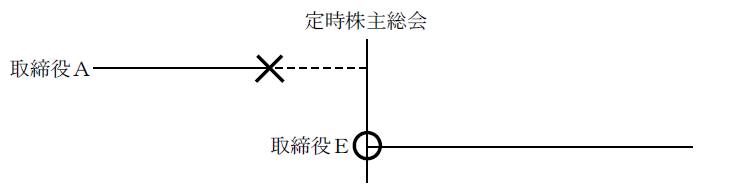
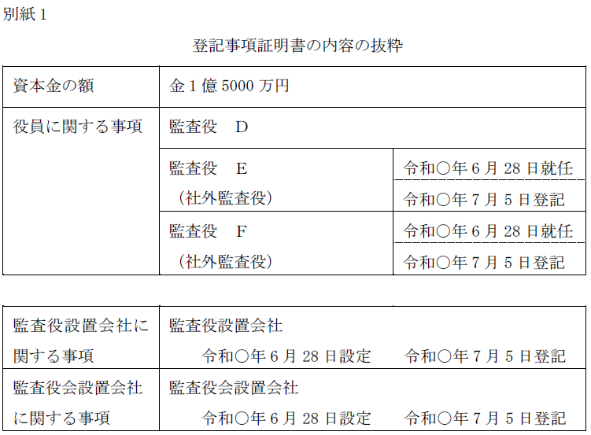

第２編 株式会社
第２章 機関
第７節 機関に関する登記
Ⅱ 退任登記
役員等が退任した場合には、役員変更登記をしなければならない。
1. 退任登記の登記事項
| 退任原因 | 登記事項 |
| 任期満了、破産手続開始決定、 後見開始の審判等 |
「年月日退任」 |
| 欠格事由に該当 | 「年月日資格喪失」 |
| 解任 | 「年月日解任」 |
| 辞任 | 「年月日辞任」 |
| 死亡 | 「年月日死亡」 |
| 権利義務が解消された場合 | 「年月日退任」または「年月日辞任」とし、本来の退任原因日付で登記する |
任期満了による退任の年月日
| 原則 | 定時株主総会の開催日 ※1 |
| 定時株主総会が翌日に継続した場合 | 定時株主総会がその日に終了せず、翌日に継続されて終了し、定時株主総会の第1日目に役員選任の決議がされた場合、任期満了により退任する役員の退任日は定時株主総会の終了した日である。 |
| 定時株主総会が定款所定の期間内に開催されなかった場合 | 定款に定時株主総会の開催時期につき毎事業年度終了後3か月内に開催する旨の定めがある株式会社につき、本来の開催時期に定時株主総会が開催されなかった（又は遅れて開催された）場合、任期満了により退任する役員の退任日は、定時株主総会が開催されるべき期間の終了日である（昭33.12.23民甲2655、昭38.5.18民甲1356）。 ※2 |
※1 取締役の任期は「定時株主総会の終結の時まで」だからである（会社法332条1項、2項）
※2 この場合の退任を証する書面は、定款となる。
2. 退任登記の添付書面
| 退任原因 | 添付書面 |
| 任期満了 | 定款、（定時）株主総会議事録（※1） |
| 破産手続開始決定 | 破産手続開始決定があったことを証する書面（破産手続開始決定書謄本） |
| 後見開始の審判 | 後見開始の審判書の謄本及びその確定証明書、又は、後見に関する登記に係る登記事項証明書〔昭57.7.20民4.4455参照〕 |
| 欠格事由に該当 | 欠格事由に該当したことを証する書面 |
| 解任 | 株主総会議事録及び株主の氏名又は名称、住所及び議決権数等を証する書面（株主リスト）（商登規61条3項）（※2） |
| 辞任 | 辞任届等（※3） |
| 死亡 | 戸籍謄抄本・住民票の写し・死亡診断書・遺族等からの株式会社に対する死亡届等 |
| 権利義務が解消された場合 | 辞任または任期満了を証する書面（死亡により権利義務が解消された場合には死亡を証する書面も必要） |
※1 定款は定時株主総会を開催すべきであった時期を明らかにするため、株主総会議事録は退任日を明らかにするために添付する。定時株主総会議事録に任期満了により退任する旨の記載がある場合には、定款は不要である（昭53.9.18民4.5003）。任期が短縮又は伸長されている場合でも同様である。
※2 会計監査人の場合には、監査役（監査委員、監査等委員）全員で解任することができるため、監査役（監査委員、監査等委員）全員の同意書を添付する場合もある。
※3 株主総会議事録に、その取締役が出席し株主総会の席上で辞任する旨を述べた旨の記載があれば、当該株主総会の議事録を援用することができる（昭36.10.12民4.197参照）。その場合には、辞任届の代わりに、「辞任届は株主総会議事録の記載を援用する」等と記載する。
取締役が退任した場合は、登記すべき事項の変更として、退任の登記をしなければならない（会社法915条1項、911条3項13号、22号イ）。
【申請例11 取締役の変更 取締役の辞任】
事例： 令和○年6月28日、取締役会設置会社の代表取締役でない取締役Ｂから辞任届が提出された。この辞任により、取締役は3名となる。なお、当該株式会社の資本金の額は、金2億円である。
1. 申請書の内容
(1) 登記の事由
「取締役の変更」と記載する。
(2) 登記すべき事項
「年月日取締役Ａ退任（死亡、辞任、解任、資格喪失）」等と記載する。
年月日は、退任等の事由が生じた日を記載する。
(3) 添付書面
①退任等の事由を証する書面
②委任状
(4) 登録免許税
申請件数1件につき、3万円（資本金の額が1億円以下の株式会社については、1万円）（登免法別表1.24(1)カ）。
(5) 成年被後見人等の辞任による登記の際の添付書面
成年被後見人の辞任は、成年被後見人自身の意思表示または成年後見人の代理（民859条1項）による意思表示による。被保佐人の辞任は、被保佐人自身の意思表示による。
①成年被後見人または被保佐人自身が辞任の意思表示をする場合
・（成年被後見人または被保佐人の）辞任届
・辞任届に押印した印鑑につき市町村長の作成した証明書（辞任する成年被後見人等が登記所に印鑑を提出しているｏｒ登記所に印鑑を提出 していない会社にあっては辞任する成年被後見人等が代表者である場合に限る）（商登規61条8項）
②成年後見人が成年被後見人に代わって辞任の意思表示をする場合
・（成年後見人の）辞任届
・成年後見登記事項証明書
・辞任届に押印した成年後見人の印鑑につき市町村長の作成した証明書（辞任する成年被後見人等が登記所に印鑑を提出しているｏｒ登記所に印鑑を提出していない会社にあっては辞任する成年被後見人等が代表者である場合に限る）（商登規61条8項）
2. 権利義務役員（取締役、会計参与及び監査役共通）
役員の退任により会社法又は定款所定の員数が欠ける結果になった場合、後任の役員を選任しなければならない。その場合でも、以下の事由により退任した役員は、新しく選任された役員（一時役員の職務を行うべき者を含む）が就任するまでは、依然として役員の権利義務を有し（会社法346条1項）、その間、退任の登記はできない（最判昭43.12.24）。
なお、権利義務を有する役員の権限・権利義務は、正規の役員と同様である。
| 要件 | ①会社法又は定款で定めた役員の員数が欠けた場合 ②任期満了又は辞任により退任した場合 |
| 対象役員等 | 取締役、会計参与、監査役、代表取締役、清算人、代表清算人、委員会委員、執行役、代表執行役 |
(1) 趣旨
株式会社の役員には、社会的な責任があり、後任者が就任するまでは役員の責任を果たす必要があるためである。
(2) 会計監査人が欠けた場合（定款で定めた員数が欠けた場合）
会計監査人には、権利義務役員の適用がない。
会計監査人が欠けた場合又は定款で定めた会計監査人の員数が欠けた場合において、遅滞なく会計監査人が選任されないときは、監査役（監査役会設置会社においては監査役会、監査等委員会設置会社においては監査等委員会、指名委員会等設置会社においては監査委員会）は、一時会計監査人の職務を行うべき者（仮会計監査人）を選任しなければならない（会社法346条4項、6項、7項、8項）。
(3) 辞任又は任期満了以外の退任事由
上記以外の退任事由（ex. 解任）の場合には、後任者が選任されず、役員が欠けたとき（会社法又は定款所定の役員の員数を満たすことができないとき）であっても、権利義務役員とはならないので、当該役員の退任による変更の登記を申請しなければならない。上記以外の事由による場合には、役員としての責任を果たすことができないと考えられるからである。
(4) 権利義務役員の辞任等
役員の権利義務を有する者は辞任をすることができず、また、株主総会により解任することもできない（昭35.10.20民4.197、昭39.10.3民甲3197）。役員の権利義務を有する者の地位は、法によって与えられた地位だからである。
新たに役員を選任すれば、権利義務を有する役員の退任の登記ができるわけだから、権利義務を有する役員を解任するのではなく、新たに役員を選任すべきである。
(5) 権利義務の解消
役員の権利義務を有する者が死亡又は欠格事由に該当した場合、退任の登記を申請することができる。このときの退任年月日は、本来の任期満了又は辞任の日となる（昭39.10.3民甲3197）。
取締役全員が任期満了により退任し、権利義務を承継した場合において、法定又は定款で定めた員数に足りない人数の取締役が就任した場合、就任した取締役の就任の登記を申請することができるが、取締役の退任の登記を申請することはできない（昭34.9.23民甲2136）。この場合には、どの者の権利義務を有する状態が終了するという規定はないためである。
【申請例12 取締役の変更 権利義務取締役の退任】
事例： 事業年度を毎年4月1日から3月31日、定時株主総会の開催期間を4月1日から2か月以内とする取締役会設置会社において、令和7年5月31日までに、最終の事業年度（令和6年4月1日から令和7年3月31日まで）に関する定時株主総会が開かれず、取締役Ａの任期が満了し、権利義務取締役となっていたが、令和7年6月28日の定時株主総会において、取締役Ｅが選任された。同日、Ｅが就任承諾書を提出した。資本金の額は、金2億円である。なお、他に任期満了又は退任した取締役はいない。

1. 機関の廃止に伴う監査役等の退任
監査役設置会社の定め（監査役会設置会社にあっては監査役会設置会社の定め及び監査役設置会社の定め）を廃止した場合には、監査役の任期は満了し、退任登記を申請することとなる。会計参与及び会計監査人も同様である。
【申請例13 監査役会設置会社の定め 廃止】
事例： 令和○年6月28日、別紙1の会社において、株主総会で、監査役会設置会社の定め及び監査役設置会社の定めを廃止する決議がされた。

2. 申請書の内容
(1) 登記の事由
「監査役会設置会社の定めの廃止」と記載する。
「監査役の変更」と記載する。
(2) 登記すべき事項
「年月日監査役会設置会社の定め廃止」と記載する。
「年月日監査役（社外監査役）Ａにつき監査役会設置会社の定め廃止により変更
監査役 Ａ」等と記載する。年月日は、廃止日を記載する。
(3) 添付書面
①株主総会議事録(特別決議の要件を満たすもの)
監査役会設置会社の定めの廃止等を決議した株主総会の議事録
②株主の氏名又は名称、住所及び議決権数等を証する書面（株主リスト）（商登規61条3項）
③委任状
(4) 登録免許税
監査役会設置会社の定めの廃止分として、申請件数1件につき、3万円（登免法別表1.24(1)ワ）。
監査役設置会社の定めの設定・廃止分として、申請件数1件につき、3万円（登免法別表1.24(1)ツ）。
監査役変更分として、申請件数1件につき、3万円（資本金の額が1億円以下の会社については、1万円）（登免法別表1.24(1)カ）。
3. 登記申請の可否等
(1) 取締役の就任の登記を抹消した結果、法律に定めた員数を欠くことになるため、前任の取締役の登記を回復する場合に、職権により退任の登記を抹消することを要するか？
→ 要する（昭57.12.15民4.7583）。
(2) 取締役を辞任したが、法令又は定款に定める員数を欠いていないにもかかわらず株式会社が退任による変更の登記をしないときは、辞任した取締役は、当該登記を命ずる確定判決を得て、自ら退任による変更の登記を申請することができるか？
→ できる（昭30.6.15民甲124）。この場合の登記すべき事項は、「年月日辞任」（判決主文又は理由で認定された退任原因及びその年月日）である。
商業登記には、不動産登記のように判決による登記の規定（不登法63条1項）はないが、判決があるため辞任した取締役が申請できる。
(3) 親会社の監査役が子会社の取締役に選任されたため、親会社の監査役を退任することとなった場合における変更登記の申請書に記載すべき退任の事由は何か？
→ 「辞任」である。親会社の監査役が、兼任できない子会社の取締役への就任を承諾した場合、監査役を辞任したものと解されているからである。